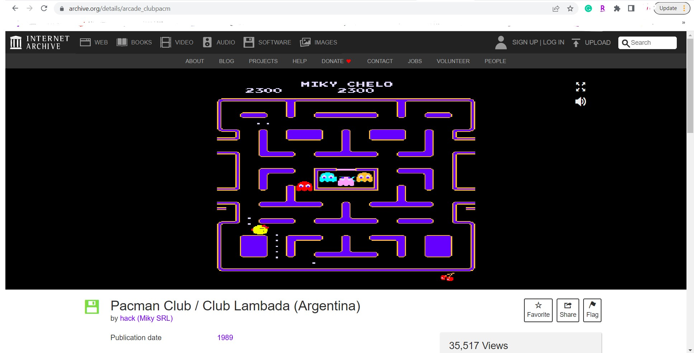

BLOG - ART 108
Blog post 3: SEVEN Prototyping
Seven is somewhat of a hybrid of Connect 4 and Black Gammon. The goal is to get 7 of your chips in a line before your opponent has the chance to. The game is played on a 10x10 board with each position as a dot. Each player gets 40 checker chips and 5 “pusher” pegs. Each player rolls the 6-sided dice, whoever got the bigger number goes first. To attack the opponent’s chip using the pusher peg, the player has to roll a 4 or higher. The pushing peg will push every piece in one direction from its position by 1. The pushing peg stays as a chip and will not be affected by attacks. The main mechanics of Seven is Pattern Building, with the 2 sub- mechanics: Push and Enclosure.
During the initial game design with Luka, Seven (beta version 0.0) consists of a lot of spare components. On the tabletop, there were 2 stacks of 40 checkers, 2 stacks of 5 pegs, a deck of extended card deck (1-15), 2 dice, and a spinner. The rules back then, besides the pusher pegs and enclosure attacks, were: placing 5 checker pieces in a row to win and attacking the opponent’s piece by putting down a card larger than the opponent’s. But this means that there are 2 overlapping rules for attacking, with a major flaw. This became an issue during the play session because one rule got completely ignored. One instant of that play session is as followed:

Play session 1 (I go first, Luka second)
I placed my checker down to create a four-in-a-row pattern without any obstacles at both ends, which send Luka a sign that if he doesn’t attack me, I would win in the next round.
Luka then decided to attack one of my checker using a card duel. Sadly I only have a 14 as the largest card in my hand so I put that down. Luka put a 15 so he got to attack my piece.
The initial rule for attacks was just removing the targeted piece. But this led to an issue: I can put down another checker in that same position and the attack would be a waste. We both realized the issue so Luka let me win that game so that we could rework the game a bit more. We worked on the game a little bit more until the end of class.
I got to play with another friend before the 3rd playtest with a classmate using the revised rules and mechanics. Before the play, I tweaked the rules by a small degree. I still keep the bigger-card attack but then I merge it with the pusher peg rule: whenever you attack/push the opponent’s checker, you have to win the card duel. If you win the card duel, the peg pushes every piece in 1 direction by 1 and stays in the chosen position. If you lose, it’s your opponent’s turn. I also increased the goal from 5-in-a-row to 7-in-a-row. After explaining the rule of Seven 1.0, my friend Vivian and I start the 2nd playtest:

Play session 2 (Vivian rolled a higher number so she went first)
Halfway through the session, Vivian planted her win by placing a piece one space away from her 4-in-a-row with no obstacles at both end.
I place my checker in the empty space in between.
Vivian declares pushing. I place down the 13 of heart, she places a 15 of club, she successfully pushes my piece to the right, making her arrangement a 6-in-a-row.
I tried stopping her pattern by placing my checker on one end.
But she wins the game by placing the 7th checkers on the other end.
In between the games, I realized because the pusher peg rule is pretty overpowered so I made a note to myself that I would imply more of the enclosure rule in the next play test. I also realized that some of the tools are a waste and some can be minimized.
That’s why for the last playtest session, I threw out the card deck and the spinner. My thought is that since we are going for the “the bigger number wins” trope, it’s better to minimize it to “roll 4-or-higher wins”. I also added the rules as text on the setting so that while I’m setting up other things others can read the rules and I just need to explain/demonstrate how the game works. For the 3rd playtest, Hannah is my game tester:

Play session 3 (I roll a higher number so I went first as black)
After around turn 10, I got 4 checker pieces and a peg in line with only one open end.
Hannah blocked me with a checker piece.
I see that her newly placed checker is surrounded by 3 of my checkers so I place another one next to her piece. Her checker is now surrounded by 4 of mine so by Enclosure rule her piece will be replaced by mine.
I win the game with the replaced checker
I’m pretty satisfied with Seven 2.0 after three playtests.
2/20/2023Blog post 1: Internet Arcade
When I first arrived at The Internet Arcade (https://archive.org/details/internetarcade), I was amazed by the number of arcade games that got lost in time. Being born in a developing country, I was not very familiar with the variety of arcade game titles. I only know the top ones such as Pac-Man, Sonic, Bomber Man World, etc... That is why even though the website includes a lot more games, I tend to search for titles that I'm familiar with.
The first game that I clicked on was Space Invaders. Sadly, I couldn't play it because of the configuration of my keyboard. I then go on to look for another game that has an instruction. I got lucky with Pacman Club, where they have instructions on how to play it outside of its original arcade box.
I couldn't feel the difference between playing Pacman on an emulator and playing on the arcade cabinet. I think because I didn't have much experience playing arcade cabinet games growing up, there wasn't much information for me to compare.
1/30/2023Blog post 2: I Doubt It Session Report
 Last Friday, I and my 5 other teammates played I Doubt It. For some of us, it was our first time in the game, some others already knew the rules so it took us quite a bit of time to actually get the round running smoothly.
Last Friday, I and my 5 other teammates played I Doubt It. For some of us, it was our first time in the game, some others already knew the rules so it took us quite a bit of time to actually get the round running smoothly.
The order of players was as followed: Quinlan, Jan, Hannah, Niyana, Grace, and me. I recorded a few rounds after we got the hang of the game. The 4th round of I Doubt It took place as followed:
Round 4th:
The round started with Quinlan putting down a 4 card.
Jan followed by putting down two 6s and a supposedly upside-down 9, stating he put down three 6s.
The chance of someone actually having three 6s in the 4th round seems suspicious to me so I halfway doubted it. Quinlan (and Jan) pushed me to call out Jan. And I did. And I was wrong. Jan, in fact, had put down three 6s. I pick up six cards.
Hannah continues with a 7.
Niyana follows with an 8 card.
Grace put down one 9.
I claim to have one 10.
Round 5th:
This is where the game started to get everyone's mind in the flow.
Quinlan put down one Jack.
Jan gets confused and put down a King. We all remind him that his turn is to put down Queens. He takes back the King and claims two Queens.
Seeing Jan claimed to have both a King and two Queens in his deck, I have my doubt, but last round gave me six cards so I decided not to risk it.
Since we have two Queens put down, Hannah decided to send two Kings to court the Queens.
Niyana claims an Ace. The stack of cards is now at 11. Unfortunately, Niyana does not know what awaits her. Quinlan immediately calls it and he is firm with his doubt. It turns out he is holding all the Aces. We burst out laughing after we heard what Quinlan said. But this is the first alarm to all the other players that we would have to play it safe since people start to hog all four of the same cards. Niyana has to pick up all 11 cards.
Grace claims to have a 2. Quinlan called again, and this time he knows all four 2s are in Jan's hand.
I end the round with a 3.
I claim to have one 10.
The game continues with me pushing Quinlan to put down his Aces and Jan put down all his 2s. In the latter rounds, the stack of discard cards was 31 until Jan made a miscalculation and called it wrongly. Surprisingly, Niyana is the one who ends the game with a victorious 3. It was fun trying to memorize who got what cards and actually communicating with each other to push them to doubt mistakenly.
2/8/2023Blog post 1: Internet Arcade
When I first arrived at The Internet Arcade (https://archive.org/details/internetarcade), I was amazed by the number of arcade games that got lost in time. Being born in a developing country, I was not very familiar with the variety of arcade game titles. I only know the top ones such as Pac-Man, Sonic, Bomber Man World, etc... That is why even though the website includes a lot more games, I tend to search for titles that I'm familiar with.
The first game that I clicked on was Space Invaders. Sadly, I couldn't play it because of the configuration of my keyboard. I then go on to look for another game that has an instruction. I got lucky with Pacman Club, where they have instructions on how to play it outside of its original arcade box.
I couldn't feel the difference between playing Pacman on an emulator and playing on the arcade cabinet. I think because I didn't have much experience playing arcade cabinet games growing up, there wasn't much information for me to compare.
1/30/2023